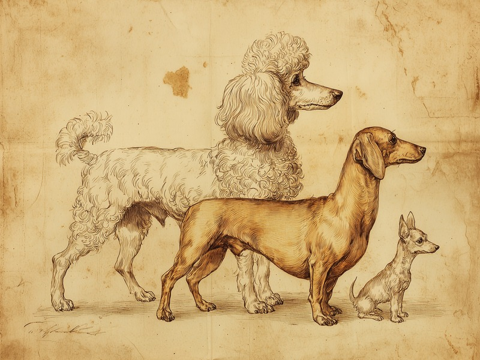

JKCの犬種別登録データ26年分を分析すると、プードルの独走、チワワの躍進、そしてダックスフンドの劇的な栄枯盛衰が見えてきました。 A 26-year analysis of Japan's official dog breed registration data reveals the poodle's steady rise to the top, the chihuahua's boom, and the dachshund's dramatic rise and fall.
26年で市場規模はほぼ半減
JKC(ジャパンケネルクラブ)が公表している犬種別登録頭数の統計を1999年から2025年まで26年分たどると、犬全体の新規登録頭数は1999年の42万4,061頭から、2003年に57万5,792頭でピークを迎えたあと減少を続け、2025年には30万2,530頭まで落ち込んでいます。四半世紀で見るとおよそ3割減、ピーク時からはほぼ半分という規模の縮小です。人気犬種の顔ぶれも、この26年間で大きく塗り替わりました。
ダックスフンド、一世を風靡してからの転落
その象徴が、ダックスフンドです。1999年時点ですでに登録数1位(76,711頭)だったダックスフンドは、そこからさらに人気が加速し、2003年には171,144頭という、単独犬種としては空前の頭数を記録しました。これは当時の全国登録数のおよそ3割を1犬種が占めていた計算になります。ところがピークを境に人気は反転し、坂を転げ落ちるように減少していきました。2025年の登録数は30,615頭で、ピーク比マイナス82%、順位も3位まで後退しています。26年間で最も劇的な浮き沈みを見せた犬種と言えそうです。
躍進したのはプードル、そして小型犬たち
一方、1999年から2025年にかけて頭数を大きく伸ばしたのはプードルです。1999年の12,473頭(13位)から2025年には69,342頭(1位)へと、実に4.6倍(+455.9%)に増加し、ダックスフンドに代わって不動の1位に立ちました。フレンチ・ブルドッグも1,907頭から9,578頭へ+402.3%と急伸し、7位まで順位を上げています。ボーダー・コリー(+114.6%)、ペキニーズ(+94.6%)、チワワ(+77.3%)も着実に数を伸ばした犬種です。
反対に、大きく数を減らした犬種も
反対に、大きく数を減らしたのは中型〜大型犬が目立ちます。ラブラドール・レトリーバーは27,343頭から3,410頭へ-87.5%、ビーグルは15,431頭から1,973頭へ-87.2%と、いずれも8〜9割近い減少です。パピヨン(-79.2%)、シー・ズー(-78.8%)、ウェルシュ・コーギー・ペンブローク(-77.9%)も大きく数を減らしました。今回のデータだけで理由を断定することはできませんが、上位に並ぶ犬種を見比べると、より小型の犬種へと人気がシフトしていった可能性はありそうです。
データの出典と算出方法
使用したデータはジャパンケネルクラブ(JKC)公式サイトで公開されている「犬種別犬籍登録頭数」の年別統計(1999年〜2025年)です。各年、登録頭数の多い上位30犬種を対象に、犬種名の表記揺れ(全角ハイフンと長音符の違いなど)を正規化した上で集計しました。プードル・ダックスフンドはJKCの公表データ自体がサイズ別内訳(トイ・ミニチュア・スタンダード等)と合計を両方示しているため、公表されている合計値をそのまま採用しています。上位30犬種に一度も入らなかった犬種のデータは含まれていない点にご留意ください。
出典: ジャパンケネルクラブ(JKC)「犬種別犬籍登録頭数」 jkc.or.jp
2025年 登録頭数トップ10を見る
| 順位 | 犬種 | 登録頭数 |
|---|
2025年のトップ10には、2010年にようやく上位30入りを果たしたばかりのビション・フリーゼが9位で顔を出しています。26年前のランキングを知る人が今の順位表を見たら、きっと驚くはずです。人気犬種の顔ぶれは、私たちが思っている以上のスピードで入れ替わっているのかもしれません。